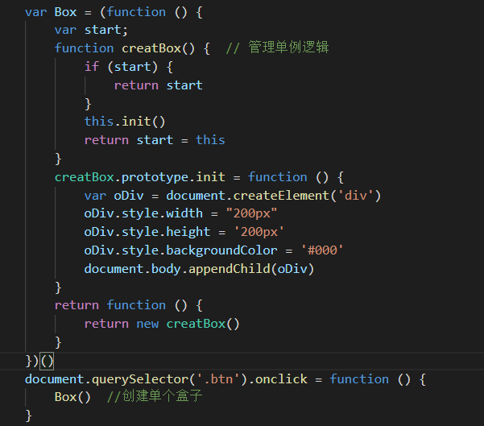

Poiey
广东省惠州
电影，旅游，游戏
此博客旨在记录学习中的过程！
简介：一名前端小学生
邮箱：692300083@qq.com
兴趣:动漫


一些关键字与保留字：
break do try typeof case else new instanceof catch in return var continue for switch while function this with default if throw delete abstract int short boolean export interface static byte extends long super char final native class float throws const goto private double import public.jpg)
.jpg)
.jpg)
# HTML #
盒模型⚪

正常盒模型：
正常盒模型的计算方法是content+padding+border
怪异盒模型：
怪异盒模型有一个属性box-sizing,这个属性有两个值，分别为：border-box ; content-box
border-box的计算方式是不改变人为设置的宽高值，内部自己进行计算。
content-box的计算方式跟正常盒模型计算方式一样。
# CSS #
默认样式清除⚪

# Javascript #
ES5严格模式⚪
ES5下的严格模式 “use strict” 的影响！
1变量提升必须使用var,否则报错
2对不合理的操作显示报错，不再做静默失败处理 ps : NAN = 123 严格模式下报错！
3禁止对象属性重名（IE）
4禁止函数参数重名
5禁止使用以0开头的八进制数字
6禁止使用with语句（正常模式下也不推荐使用）
7强制为eval创建新的作用域
8 arguments不再追踪参数变化
9 禁止使用arguments.callee （调用函数自己）
10 函数中禁止this指向window，this变undefined
11函数必须声明在整个脚本或者函数层面
12 新增一些关键字，变量命名不可用
面向对象⚪
首先，javascript是一门弱类型语言，没有类，一切皆对象。
面向对象是一种软件开发方式，将对象作为基本单元。是一种高级的编程思想。
创建对象的方法，这里只列几种方法：
1 实例化一个对象 也就是new一个对象出来。
2 字面量对象 var obj = {} ;
3 工厂模式 原理为 原料 => 加工 => 出厂
工厂模式的缺陷：不同对象的相同方法仍然有多个。无法解决对象类型识别问题。
4 构造函数 js里存在很多内置的构造函数 Object Array String Number等等
构造函数内部给this添加属性和方法，此时的this就代表运行它的对象。
构造函数跟工厂模式很像，但是构造函数内部会自动创建和输出这个对象，只需添加属性及方法。
构造函数的缺陷：创建多个对象时，不同对象的相同方法仍然存在多个。
5 原型模式 每个对象都会有一个prototype属性 这个属性的作用就是继承
原型模式就是将对象的方法写到对象的原型上，比如：Object.prototype.abc = '123'
原型模式的缺陷：prototype的方法可以共享了，但是却得到了相同的属性值。这是不适合的。
6 混合模式 意味着就是构造函数和原型模式混合用，对象的属性写到构造函数内，对象的方法写到对象的原型上。
混合模式的优势就是可以把这个构造函数定义成一个类，由于js里是没有类这个概念的，所以可以用构造函数来定义实例属性，原型模式可以用来定义共享的属性及方法。
闭包⚪
首先，什么是闭包呢？
官方给出的解释：一个拥有许多变量和绑定了这些变量的环境的表达式（通常是一个函数），因而这些变量也是该表达式的一部分。
我的理解是：
1.首先闭包是一个函数对象
2.它始终保持对上层作用域的引用
3.跟词法作用域，作用域链，垃圾回收机制息息相关
4.要在其作用域外能够被访问
5.闭包是和它上层的执行上下文共同构成
简单说一下词法作用域
词法作用域也叫做静态作用域，它的作用域是指在词法分析的时候就被设定好了，不可修改。
还有一种叫动态作用域，是在运行时根据程序的流程信息来动态确定的，而不是在写代码时进行静态确定的
这两种作用域简单来说就是词法作用域关注的时函数什么时候被命名，动态作用域关注的时函数什么时候被调用
垃圾回收机制
各大浏览器通常采用的垃圾回收有两种方法：标记清除、引用计数
标记清除:当变量进入执行环境时，变量标记成'进入环境'，当变量退出执行环境时，变量标记成'离开环境'，并被销毁收回内存。
引用计数:跟踪并记录变量引用次数，当引用次数变成0时，该变量被销毁并回收内存。
闭包的优点：
能够在外部引用内部函数
能够把内部变量保存下来
将模块的共有属性和方法暴露出来
闭包的缺点：
滥用闭包会导致大量数据被内存保存下来，会导致内存泄露。
原型和原型链⚪
Javascript是一门直译型脚本语言，是一门基于原型的语言。
JS对象分为普通对象和函数对象
【原型】：prototype
那什么叫原型呢？每个函数对象都会有个原型属性(Function的原型是没有prototype属性的，返回值为undefined)，prototype属性是对象的一个默认属性。
原型的作用是继承
# Bootstrap #
# Swiper #
Swiper轮播图⚪

# jQuery #
# JS编程思维【1】 #
设计模式⚪
设计模式的特点：是一种简洁优雅的编程思路！
设计模式种类共23种，这里不一一举例！
工厂模式:
工厂模式主要用于创建复杂的对象构建，生成多个不同实例的对象场景。
单例模式:
单例模式主要特点是旨在只创建一个实例对象，并且提供一个访问它的全局访问点。
# Ajax #
ajax跨域⚪
ajax的跨域是指由于浏览器的同源策略；禁止ajax从一个域名请求另外一个域名上的数据。
同源是指域名，协议，端口均为相同
同源策略，是为了对javascript实施安全限制。
跨域的解决方案
1.通过后端语言去请求，后端语言没有跨域限制；然后返回页面。
2.json跨域 : json跨域实际就是通过script标签的跨域能力请求资源，将json的url给script标签的src
json只针对get请求
3.CORS(xhr2) 跨域资源共享 服务端加上header("Access-Control-Allow-Origin:*"); 允许任何来源
这里jsonp请求的原理是:创建一个script标签，将请求的url赋给script的src,将传过去的数据写在src后面，传一个回调函数接传回来的数据。
Promise承诺⚪
Promise是ES6解决异步的一种方案，简单来说promise是一个容器，里面存放着一个尚未完成但是预计要进行的异步操作。
Promise是一个构造函数，用来创建一个Promise对象。
promise有三种状态 : pending(进行中) fulfilled(已成功) rejected(已失败)
Promise构造函数接受一个函数作为参数，该函数的两个参数分别是resolve和reject
var p = new Promise(function(resolve,reject){code...})
promise实例的两个方法 : 1.then() 第一个是resolved状态的回调函数; 第二个是rejected状态的回调函数
2.catch() 用于指定发生错误是的回调函数；
Promise最大的作用就是让异步代码能像同步代码的执行顺序执行。
Promise内的代码是同步代码。
Promise.all可以将多个Promise实例包装成一个新的Promise实例
Promise.all([p1,p2,p3]).then(function (arr){
console.log(arr);
},function (error){
console.log(error);
});
Promise.all可以将多个异步操作放在一个数组里，等待他们全部执行完再执行下一个操作，如果其中一个操作有问题，那么就返回错误的信息。
# 模块化 #
ES6模块化⚪
script标签要加上"type = module",这样浏览器才会将相关代码当作ES6模块化来对待。
路径不能写裸路径,就算是同一层也要加"./name.js"。
ES6模块化会默认严格模式，头部默认添加"use strict"
ES6 模块功能主要由两个命令构成：export 和 import。
export命令用于规定模块的对外接口，import命令用于输入其他模块提供的功能。
一个模块就是一个独立的文件，该文件内部的所有变量，外部无法获取。
浏览器加载规则⚪
默认情况下,浏览器遇到script标签就会停止渲染页面,如果是引用外部脚本文件，而且文件过大的情况下,页面会出现卡死,页面无任何相应。
解决这种问题，就要使用异步的方法来加载页面，异步加载js有两种方法:
defer和async
这两种语法的区别是 ：使用defer，浏览器加载完脚本不会立即执行，它会等到页面渲染引擎渲染完页面，才会去执行js脚本。
使用async,当浏览器加载完js脚本时，页面渲染引擎还未渲染完，则会停止渲染，等待执行完脚本，再去渲染页面，如果脚本文件过大，则会导致页面出现卡死状态。影响用户体验。
ES6模块化会默认添加defer语句，也属于异步方法。
# Gulp #
# Sass #
# Git #